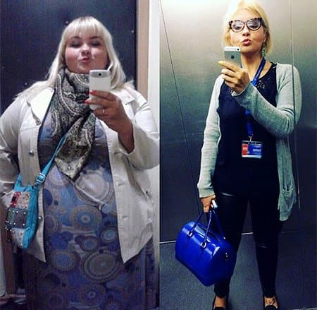
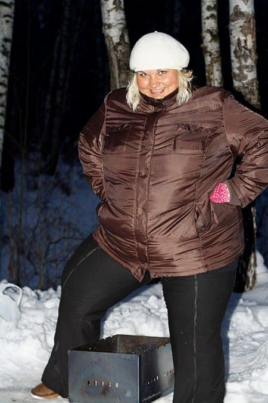
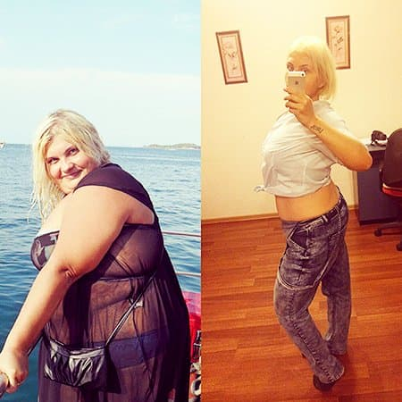
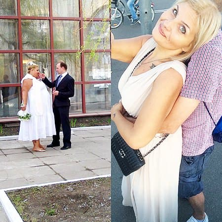
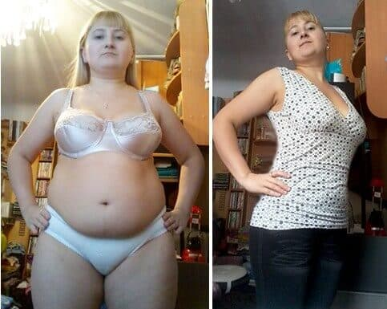
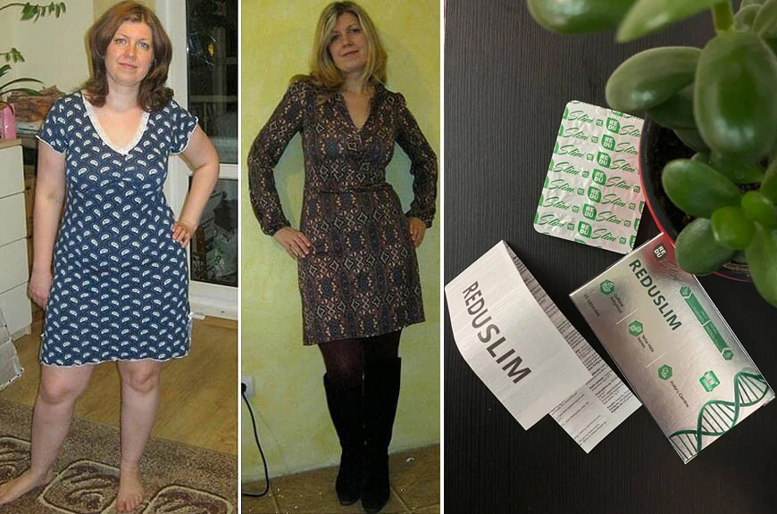

Rezultatul record al anului la slăbire: cum a reușit o tânără din Chișinău să slăbească cu 100 kg

Recent în rețelele sociale au apărut forografiile incendiare ale Nataliei Ciobanu- tânăra din Chișinău a slăbit cu 100 kg! Utilizatorii au fost atât de șocați, încât au asaltat-o pe Natalia cu scrisori. "Tânăra-superman" (astfel este numită acum) a decis să răspundă la toate întrebările și a trimis istoria sa palpitantă la redacția POINT. Avem plăcerea să vă aducem la cunoștință povestea ei.
Voi spune din start: n-am avut probleme de sănătate. M-am născut cu o greutate normală- 3,5 kg. Cauza kilogramelor în plus a fost supraalimentarea: la 15 ani cântăream deja 100 kg. Părinții m-au purtat pe la doctorii, m-au internat în spitale, dar fără rezultat. La 20 de ani cântăream deja 120 kg.
În ciuda tachinărilor din școală și universitate, a privirilor trecătorilor, nu m-am gândit nici pentru o clipă că aș avea probleme. Eram ferm convinsă că greutatea în plus nu e un obtacol pentru a fi fericit. Continuam să mănânc fast-food și alte porcării, cheltuind jumătate din salariu pe alimente. Se pare că aveam un cult al mâncării. Dar aceasta într-adevăr nu mi-a creat niciun obstacol- la 28 de ani l-am cunoscut pe viitorul meu soț și ne-am căsătorit în curând. Imaginați-vă cum au reacționat prietenii lui la faptul că suntem împreună, pe atunci cântăream 150 kg.

În primii 2 ani de căsnicie am mai adăugat 20 kg, astfel încât am ajuns să cântăresc 170 kg. Cu toate acestea, mă simțeam cel mai fericit om de pe pământ. Paradoxal, dar problemele oamenilor grași păreau să mă înconjoare - nivelul zahărului era în normă, organele erau sănătoase, nu aveam gâfâieli.
Primele probleme au apărut ceva mai târziu, atunci când nu reușeam să rămân însărcinată. După câteva eșecuri au început certurile. Mai târziu... am aflat că soțul mă înșela. Odată l-am amenințat că voi divorța, iar el a spus: "Privește în oglindă! Crezi că se mai uită cineva la tine?". Simțeam că s-a rupt ceva în mine. Am decis să-i dovedesc că pot atrage atenția cuiva!
Ca și majotitatea persoanelor aflate în situația mea, am început cu diete și foame. Am observat un lucru ciudat: oamenii încep să citească articole utile despre slăbire doar după ce au avut câteva eșecuri. Am ajuns de două ori la epuizare, fără însă să pierd vreun gram. Am decis să studiez acest proces din punct de vedere științific: am căutat forumuri, site-uri, am citit reviste.
Am aflat o grămadă de lucruri despre problema mea. Am început să mănânc mai des și am micșorat porțiile: aveam câte 8 mese pe zi. Cu timpul am înlocuit mâncarea nesănătoasă cu alimente benefice. Acest proces a durat aproape 6 luni. În fine, termenul nu este atât de important. Am adăugat plimbări lungi, câte 2-3 ore, mai ales că vremea era frumoasă. În plus, la sfatul unui instructor de fitness, am comandat arzătorul eficient de grăsime , care trebuia să accelereze în mod semnificativ procesul de scădere a greutății.

Prin urmare, rezultatul nu s-a lăsat așteptat. După două luni în care am adoptat noul regim, am slăbit cu 50 kg! Medicul meu îmi împărtășea bucuria, a spus că slăbesc sănătos și m-a sfătuit să continui cantitatea de . La acel moment îl administram de două ori pe zi.

Și totuși, kilogramele continuau să se topească. Peste încă o lună cântăream 90 kg, iar peste alte două luni- mai puțin de 80 kg. Într-un sfârșit, am văzut pe cântar cifra 70. În decurs de 5 luni am slăbit cu 100 kg. Prieteni, aceste sentimente nu pot fi descrise în cuvinte. Eram fericită până la lacrimi. Imaginați-vă acest miracol!!!

În fotografia din stânga sunt eu și fostul meu soț. În cea din dreapta sunt cu noul meu iubit. Îmi amintesc cum îmi spunea că nimeni nu se va uita la mine...
Deci, de la 170 kg am ajuns la 70. De la mărimea 70 la îmbrăcăminte am ajuns să port 48. Arăt foarte bine, pielea s-a întins și nu am niciun dosconfort cauzat de slăbirea bruscă. Apropo, de curând am început să practic yoga și înotul, regret că nu am făcut acest lucru înainte, este foarte cool. La moment, scopul meu este un exterior estetic. Iubitul mă susține și merge împreună cu mine în fiecare zi la antrenamente. Acum pot afirma cu siguranță că sunt fericită.
Iată cum arăt în prezent. Mai am de muncit și știu că voi obține rezultatul dorit. Sper că istoria mea va servi în calitate de bună motivație pentru mulți oameni. Amuzant, unii nu pot dea jos nici 5 kg, pe când eu am slăbit cu O SUTĂ. O mică remarcă- nu exagerați cu preparatul . Adminsitrați-l conform instrucțiunilor, în caz contrar riscați "să ardeți" mai repede decât e necesar și veți avea pielea lăsată. Succes!
ATENȚIE! Feriți-vă de falsuri!
la
soldul lotului cu preț redus constituie:
buc.
buc.
Daria
Îi mulțumesc tinerei pentru această dezvăluire! Și-a creat singură probleme, dar a găsit totuși soluția. Într-adevăr e bravo!
Valeria
Sunt mirată, suntem în și n-ai auzit de ?))) Pe scurt, este un arzător puternic de grăsimi. Ți-l recomand cu încredere, funcționează perfect. Am slăbit anul trecut cu ajutorul lui.

Alexa
Fetelor, vreau și eu acest produs! De unde să-l cumpăr? N-am înțeles(((
Alisa
Cea mai bună soluție este să-l comanzi pe site-ul oficial. Livrarea este rapidă și costă ieftin. În acest fel ești sigură că nu-i un produs contrafăcut.
Elena
Am folosit acest produs 2 luni. N-am voie să fac sport și nu am corectat alimentația. Fetelor, e minunat. Încercați-l și nu veți regreta!

Maia85
Nu pot să cred că niște pastile pot avea un astfel de efect... 100 de kilograme în 5 luni- este ireal.
Felicia
Pare a fi dezvăluirea secolului. N-am auzit niciodată că oamenii pot slăbi ATÂT de mult. 70 de kilograme!!! Șocant!